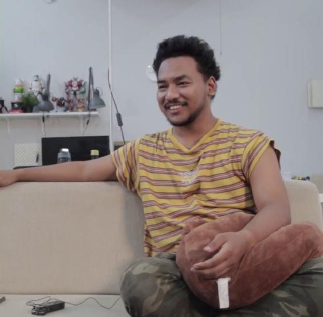
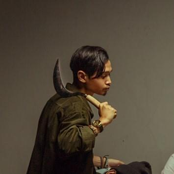
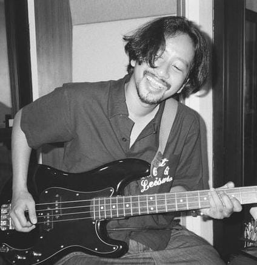

Tiang masih berdiri
Bendera makin tinggi
Berkibar tiap pagi
Dimakan matahari
Merah makin memudar
Yang bunglon merasa benar
Putih makin menguning
Yang pintar masih berpaling
Ditinggal beasiswa
Tenang kawan, tak apa
Bertahan, buat apa?
Belum ada artinya
Masih dipeluk setan
Alergi peradaban
Alergi kemajuan
Mendorong kemunduran
Pemimpin di esok hari
(Adakah yang cukup mampu?)
Mewakilkan suara kami
(Jelas tak ada yang tahu!)
Ada yang cukup peduli
Umat yang dikelabui
Melupakan masa lalu
(Namun kami belum tentu!)
Earth-03 kerusuhan lagi
Earth-04 perang nuklir lagi
Jadikan pelajaran
Jangan sampai rusak beneran
Earth-02 masih main tusuk
Tiap hari kian buruk
Ayo cepat mending rujuk
Jangan sampai salah tunjuk
Pemimpin di esok hari
(Adakah yang cukup mampu?)
Mewakilkan suara kami
(Jelas tak ada yang tahu!)
Ada yang cukup peduli
Umat yang dikelabui
Melupakan masa lalu
(Namun kami belum tentu!)
Pemimpin di esok hari
(Adakah yang cukup mampu?)
Mewakilkan suara kami
(Jelas tak ada yang tahu!)
Ada yang cukup peduli
Umat yang dikelabui
Melupakan masa lalu
(Namun kami belum tentu!)
Apa guna gelar kami?
(Siapa yang sudah tahu?)
Jadi apa tua nanti?
(Tentu kami belum tahu!)
Tumblr, Reddit diblok lagi
(Siapa bilang situs biru?)
Untuk apa terkoneksi
(Jika masih mati lampu?)
Cukup dikasih hati
(Masih minta tambah paru)
Pura-pura bersih lagi
(Bagaikan Kalpataru)
Jelas-jelas tangan besi
(Masih berlagak rindu!)
Sembah Tuhan tiap minggu
(Tapi masih lempar batu)
Ada yang cukup peduli
Umat yang dikelabui
Melupakan masa lalu
(Namun kami belum tentu!)
Ada yang cukup peduli
Umat yang dikelabui
Melupakan masa lalu
(Namun kami belum tentu!)
Sumber : musixmatch
Band rock Jakarta, .Feast, meluncurkan single “Kami Belum Tentu” setelah “Peradaban” dan “Berita Kehilangan”. Lagu ini menyoroti persepsi tentang apatisnya anak muda Indonesia terhadap isu-isu nasional, menentang generalisasi tersebut. Menggunakan lirik lugas, .Feast mengungkap kekhawatiran masyarakat terhadap berita palsu dan rasa pesimis anak muda dalam berprotes.
Anak muda seringkali dituding tidak paham mengenai isu-isu nasional, namun menurut Baskara Putra, penulis lirik .Feast, banyak di antara mereka yang memahami dan mengikuti isu besar seperti pelanggaran HAM atau skandal politik. Namun, karena banyak kasus tak kunjung selesai, mereka mulai merasa kebas. Meski begitu, mereka tetap sadar dan tidak melupakan. Dengan video lirik yang menunjukkan proses pencarian kasus-kasus di internet, .Feast menegaskan kesadaran politik mereka. Band ini menunjukkan bahwa musisi muda di Indonesia mampu dan peduli terhadap isu sosial dan politik, menggunakan musik sebagai medianya. Lagu ini, yang direkam di Studio Soundpole dan memiliki artwork dari Mikael Aldo dan Baskara Putra, tersedia di berbagai platform musik digital.
Sumber : thedisplay.net
Selama hampir satu dekade, .Feast telah merilis puluhan karya dan menarik ratusan ribu pendengar setiap bulannya. Mereka dikenal karena lantang menyuarakan berbagai isu sosial dan politik melalui musik mereka. Musik band ini energetik, kontemporer, penuh emosi, megah, mudah disukai, dan bisa membuat pendengarnya bergerak mengikuti iramaa. .Feast yang didirikan pada 2013 terdiri dari Daniel Baskara Putra (vokal, synth), Adnan Satyanugraha Putra (gitar), Dicky Renanda Putra (gitar), Fadli Fikriawan Wibowo (bass), dan Adrianus Aristo Haryo (drum). Meski menghadapi tantangan di awal karier, band ini mulai dikenal pada 2017 dengan rilisnya album Multiverses. Album ini mencerminkan beragam latar belakang dan pengaruh musik dari setiap anggota band.
Sumber : SUN EATER
| Personil .Feast |
|---|
|
Daniel Baskara Putra (vokal, synth) |
| 
Adnan Satyanugraha Putra (gitar) |
| 
Dicky Renanda Putra (gitar) |
| 
Fadli Fikriawan Wibowo (bass) |